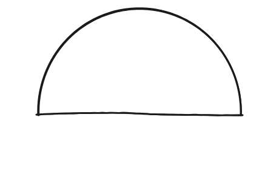
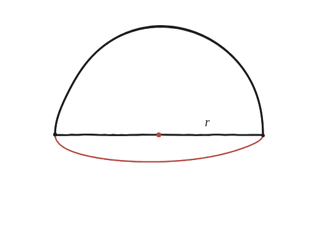

Pots trobar el centroide d'un semicercle? I el seu centroide de perímetre?

Dues preguntes, no una
"El centroide d'un semicercle" pot voler dir dues coses diferents: el centre de massa de la regió (com si fos una peça massissa) o el centre de massa del seu arc (com si fos només el fil corbat de la vora, sense el diàmetre). Res no garanteix que coincideixin.

El teorema de Pappus
Quan una figura plana gira al voltant d'un eix que no la travessa, el volum del sòlid que engendra és àrea × 2π × distància del centroide a l'eix. Si es coneix el volum del sòlid (perquè és una forma coneguda) i l'àrea de la figura, es pot fer servir aquesta mateixa fórmula a l'inrevés per aïllar la distància del centroide —sense haver-la calculat directament.
Girar la regió: una esfera sencera
Girant la regió semicircular al voltant del seu diàmetre, el sòlid que en surt és una esfera completa de radi r —el semicercle escombra tot l'espai al voltant de l'eix. El seu volum, (4/3)πr³, ja és conegut.
Girar l'arc: la superfície de la mateixa esfera
Girant només l'arc (sense la regió que hi ha a dins), no es genera cap volum: es genera la superfície d'aquesta mateixa esfera, 4πr² —una closca buida, no una bola massissa.
Aïllar les dues distàncies
Per a la regió: (4/3)πr³ = (πr²/2)·2π·d, d'on d = 4r/(3π). Per a l'arc: 4πr² = (πr)·2π·d, d'on d = 2r/π. Les dues distàncies surten diferents —la regió té el centroide més a prop del centre del cercle que l'arc.
El centroide de la regió semicircular és a 4r/(3π)≈0,424r del centre; el del seu arc perimetral és a 2r/π≈0,637r —més lluny. Les dues distàncies surten d'aplicar el teorema de Pappus a l'inrevés: es coneix el volum (o la superfície) de l'esfera que engendra el gir, i s'aïlla la distància del centroide que fa que la fórmula quadri.
Comprovació
Amb r=3: centroide de l'àrea a 4×3/(3π)≈1,27 del centre. Centroide del perímetre a 2×3/π≈1,91. Diferents entre si, confirmant que calen totes dues fórmules per separat.